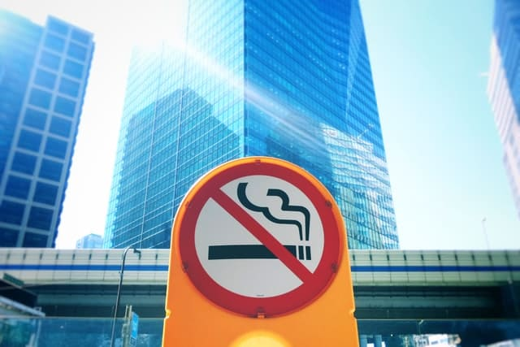

Fábrica de Felicidade - 2022
Estresse
Por Shin emO que é estresse?
Todos nós temos estresse. Não se assuste, pois ao contrário do que é popularizado, este não é um sintoma apenas de pessoas nervosas.
O estresse, do inglês stress, é uma reação natural do ser humano ao se deparar com situações de perigo. Vários autores contam a história sobre os humanos de antigamente que só sobreviveram devido ao estresse, pois ele prepara a pessoa para se defender com diversas alterações fisiológicas.
Aumenta a atenção, acelera os batimentos cardíacos, tensiona os músculos e ainda libera alguns hormônios como adrenalina, cortisol e norepinefrina.
O corpo fica em estado de alerta preparado para algo anormal.
Se você busca se aprofundar no assunto com entendimento técnico, recomendo consultar diretamente o link do hospital Albert Einstein.
Estresse na prática
Como continuou nessa leitura, agora falaremos sobre estresse de forma mais prática, com situações voltadas ao nosso dia a dia.
Uma boa analogia poderia ser feita do estresse e o pedal acelerador do carro. Se estiver precisando de mais velocidade, você pisa no pedal para acelerar. Se os humanos tivessem este pedal, seria atribuído ao mecanismo que injetaria mais estresse ao corpo.
Nesse mecanismo, tudo está como o esperado. Acelera quando for necessário e solta o acelerador se não precisar de mais velocidade.
O grande problema acontece caso o pedal acelerador travar acionado. Assim, o carro terá vários problemas. Não será possível fazer curvas acentuadas, gastará mais pneu, o motor uma hora poderá explodir etc. Este seria o estresse do carro.
Com os humanos, acontece de forma similar. Com a atual rotina insana em que vivemos, onde estamos 24 horas on-line, pressão para entregas imediatas, atender a prazos que tornam-se cada vez menores, ficamos em um ambiente estressante a todo momento.
Sem contar a cobrança do trabalho, amigos e familiares para sermos sempre melhores, não aceitar o que somos naturalmente. É o pedal de acelerador no máximo por horas, dias, anos.
Isso acaba gerando um estresse onde não seria necessário. Não é uma situação de vida ou morte tudo o que nos é cobrado. Porém, o estresse gerado é o mesmo.
Portanto, desnecessariamente o corpo fica com os batimentos cardíacos acelerados, a pressão arterial aumenta, nossa adrenalina etc. Os efeitos desse turbilhão de alterações no nosso corpo são muito prejudiciais.
Problemas do Stress
Não é preciso ter um exame para constatar que uma pessoa esteja estressada. Em uma simples conversa é possível detectar a impaciência, euforia para obter as respostas o mais rápido possível, uma falta de empatia.
Esse impacto já é imediato, mas a longo prazo a tendência é agravar. Abaixa o sistema imunológico deixando o indivíduo mais sucetível a infecções.
Doenças do coração podem aparecer. Alterações de peso, queda de cabelo, aumento de chances de diabetes, dores pelo corpo. Não bastando, pesquisas sempre estão encontrando mais malefícios ao organismo causados por estresse excessivo.
Diminuir o Stress
Uma boa forma de reduzir o estresse é ter uma vida mais saudável. Não é necessário mudar de emprego, de cidade ou de amizades. O necessário é equilibrar a rotina.
Alguma atividade física pode auxiliar em vários fatores. Além de produzir hormônios que equilibram o estresse, ajudam a regular o sono que também é eficaz contra o estresse.
Buscar um convívio social saudável ajuda a acalmar o cérebro e acaba sendo uma terapia natural e efetiva.
Café, álcool e nicotina, de preferência devem ser evitados nos períodos de alto estresse. O motivo é que nesse momento, a intenção é abaixar a frequência do organismo e essas substâncias promovem uma reação contrária ao corpo.
Dica no trabalho
Caso perceba que existe um estresse generalizado no seu trabalho, uma opção é pautar isso para o seu superior ou ao RH.
Uma opção para empresas é fazer alguma ação para conscientização do estresse e podem ser tomadas algumas ações para o bem-estar.
Por exemplo, uma empresa que é especialista em fazer uma dinâmica alertando sobre estresse e incentiva a saúde é a Fábrica de Felicidade . Através de interações e entretenimento sem gastar muito tempo, mostra na prática os efeitos da felicidade no trabalho sendo um deles a diminuição do estresse.

Um forte abraço e gratidão pela leitura. 😉